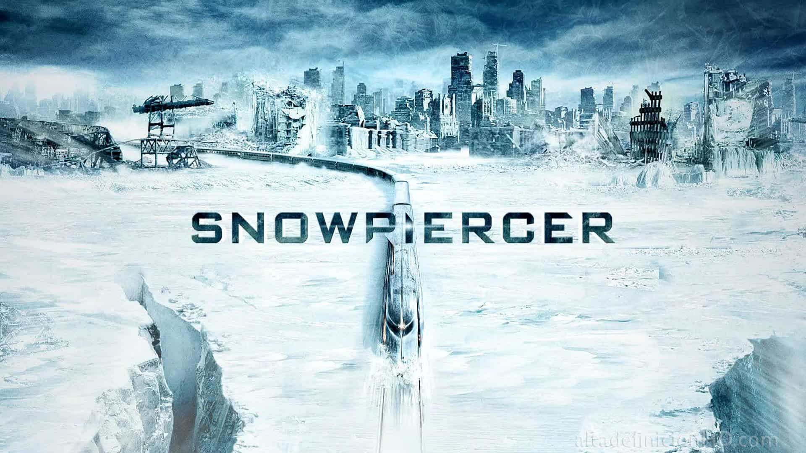

- Home
- >
- Portfolio
- >
- Apocalipse da Tera Congelada
Apocalipse da Tera Congelada
Ocorrência: Cientistas lançaram CW-7 na atmosfera
Nesse evento, a Terra estava começando a se aquecer muito devido ao efeito estufa e toda a degradação ambiental que estava ocorrendo no planeta. Dessa forma, um grupo de cientistas começou a desenvolver um novo composto chamado de CW-7, cujo objetivo seria de refletir a luz solar e esfriar a Terra. O grande problema foi que o CW-7 foi eficiente até de mais e refletiu muito da luz solar que atingia a Terra causando uma nova era do gelo, no qual a raça humana só não foi extinta, porque o ambicioso Wilford criou uma espécie de arca em forma de trem que pudesse manter uma certa quantidade de humanos vivo.
Nesse caso, resetamos essa linha do tempo para que mais pessoas pudessem ficar vivas e não somente aqueles que conseguiram uma vaga no trem. Futuramente eles acabaram descobrindo uma outra forma de contornar o crescente calor na Terra sem causar uma nova era do gelo. Tudo isso foi feito de acordo com a vontade dos Time-Keepers para proteger a sagrada linha do tempo.
O reset ocorreu no dia 23 de junho de 2057, às 17:25:13.
Voltar